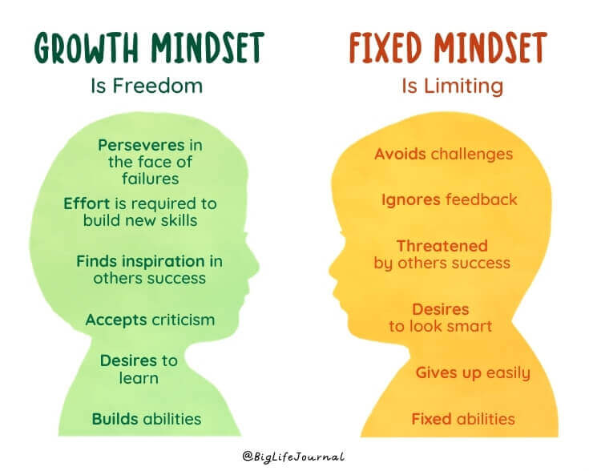

When you are learning something this creates pathways in your brain. Its the same if you think something eg a negative thought, if you keep thinking a negative thought then that thought becomes more embedded in your brain, it becomes an easy path for you to go down. The same is true for learning tasks outside of just thinking. If you learn a skill such as playing the piano, or coding, you will create pathways in your brain. If you keep repeating this learning that pathway will become more embeded. This is true even if you just think about the skill you learnt and visualise it. It is important to know this because when it comes to learning, taking the time to reflect on your learning will help you actually get better.
I think the most useful ways for me to increase my neuroplasticity is to engage more in active reflection on what I have learnt.
I found this YouTube - Improving our Neuroplasticity- quite interesting (it also explained why I love knitting so much!)
A Growth mindset is simply put the idea that you will keep continuing to grow, in yourself, in your skills, in any way you want and you won't beat yourself up along the way. The best thing you can do is to try something and keep going, even when it's hard or your fail. In fact seeing failure as an opportunity for learning instead.
I think it's really explained quite nicely in the image below.

The best way that I can implement this into my journey is really through a few mantra's. I have been repeating to myself things like "not yet" "You'll learn it when you learn it" and also just taking a break when things are getting a bit much.
I really like the video suggested by Dev Academy - The power of believing you can improve
I think they already have. As mentioned I am finding the repeated mantra's super useful to encourage me to keep going. I also will try and do more active reflection to try embed the skills I have learnt better.